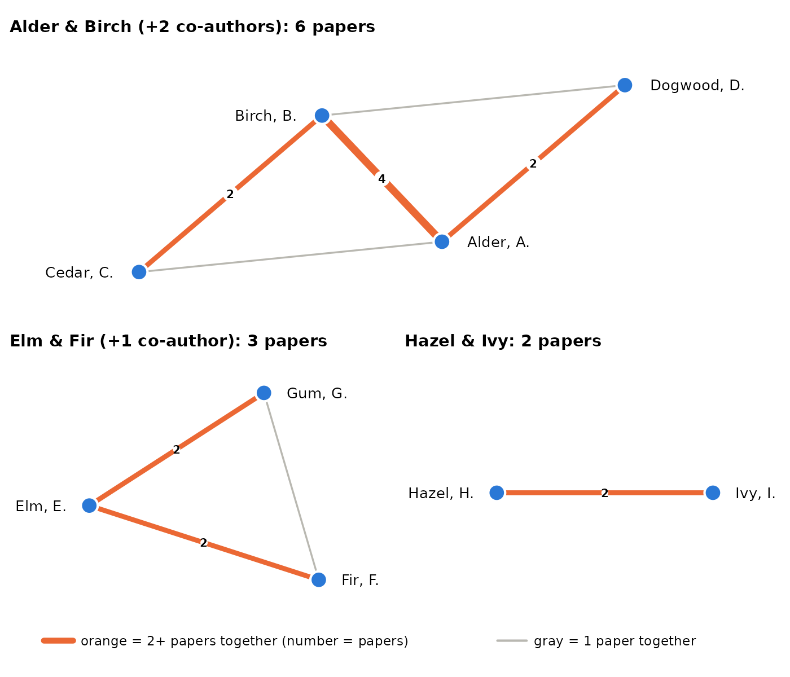
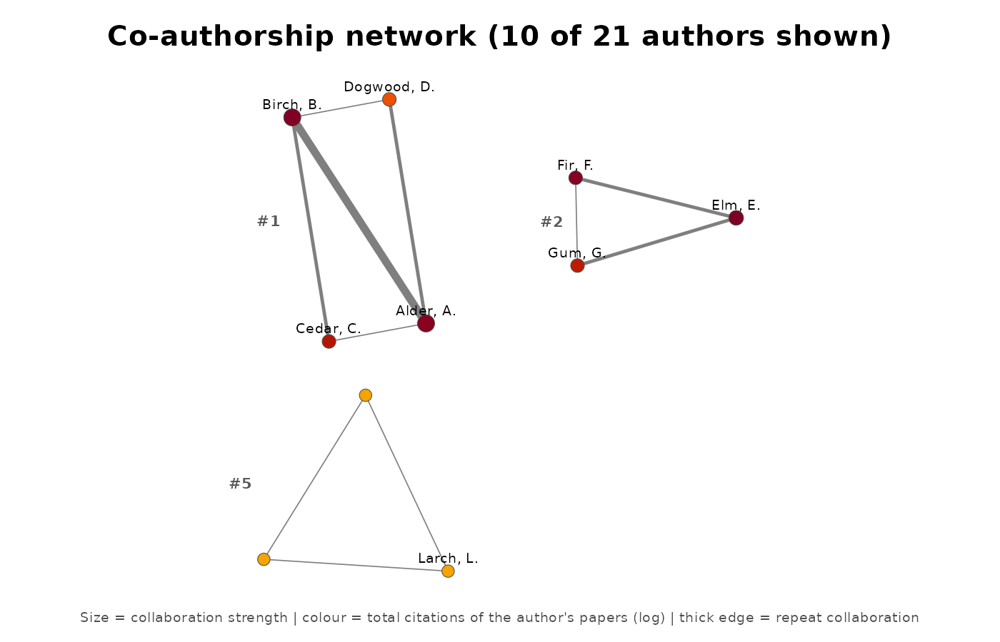
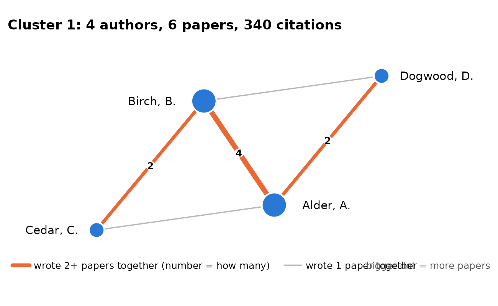
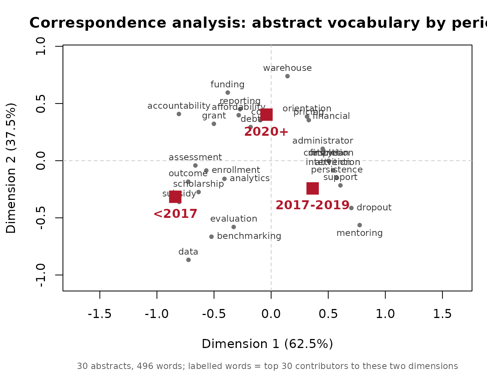

Duplicates, rankings, networks and abstract analysis
Source:vignettes/analysis-tools.Rmd
analysis-tools.RmdIntroduction
The Getting started vignette covers getting records into R: converting RefWorks and RIS exports, reading BibTeX, parsing Google Scholar results, and filling in missing abstracts. This vignette covers what you can do once you have a data frame of papers. Four tools are described here:
| Question | Function |
|---|---|
| Is the same paper listed twice? |
find_duplicate_papers(),
dedupe_papers()
|
| Which papers, venues and authors are cited most? | citation_rank() |
| Who writes together, and in which groups? |
author_network() and its plots |
| How does the vocabulary of abstracts change over time? | abstract_ca() |
None of them needs a Scopus or Web of Science subscription. They work on the data frames that the rest of citelens produces, or on any data frame with the right columns.
The network plots use the igraph package, which is not required by
the rest of citelens. Install it with
install.packages("igraph") if you want them.
Sample data
The examples use two small data sets that ship with the package. Both are synthetic: the names, titles and abstracts are invented.
f <- system.file("extdata", "sample_authors.csv", package = "citelens")
papers <- read.csv(f, stringsAsFactors = FALSE)
dim(papers)
#> [1] 18 4
head(papers, 4)
#> title authors
#> 1 Persistence gaps in first-year cohorts Alder, A. and Birch, B.
#> 2 Advising models and degree completion Alder, A. and Birch, B. and Cedar, C.
#> 3 Peer mentoring and course success Birch, B. and Cedar, C.
#> 4 Early alerts in gateway courses Alder, A. and Dogwood, D.
#> year cited_by
#> 1 2018 120
#> 2 2019 85
#> 3 2020 60
#> 4 2021 40sample_authors.csv has 18 rows with the columns the
functions expect by default: title, authors
(separated by ” and “), year and cited_by. If
your data comes from bib_to_df() the author column is
called author, and the functions below detect it
automatically. If your columns have other names, every function has
arguments (title, authors, year,
cites) to say which column is which.
Finding duplicate papers
Google Scholar and reference managers often list one paper more than
once: a journal version and a preprint, a re-indexed copy with a single
citation, a reprint with a new year. Left alone, duplicates inflate
citation counts and make two authors look as if they wrote more papers
together than they did. find_duplicate_papers() flags
likely duplicates without changing your data.
dups <- find_duplicate_papers(papers)
dups
#> 1 group(s) of likely duplicates; 1 row(s) would be dropped.
#>
#> Group 1
#> KEEP row 1 2018 | Alder, A. and Birch, B. | 120 cites | Persistence gaps in first-year cohorts
#> drop row 7 2019 | Alder, A. and Birch, B. | 1 cites | Persistence gaps in first-year cohorts.Rows 1 and 7 are the same paper: the title differs only by a full
stop, the year differs, and the second copy has one citation. The
most-cited copy in each group is marked KEEP.
Titles are compared after lower-casing and removing accents,
punctuation and extra spaces. By default (method = "near")
titles that are within 8% of each other by edit distance also match,
which catches a missing word or a typo. Use
method = "exact" to require identical normalised titles, or
change the tolerance with max_dist.
Same title, different paper
Generic titles are common. Row 18 of the sample data has exactly the
same title as row 1, but it is by different authors and is a different
paper. It is not flagged, because by default a pair must also share at
least one author surname (require_author_overlap = TRUE).
Turning the check off shows what would happen otherwise:
find_duplicate_papers(papers, require_author_overlap = FALSE)
#> 1 group(s) of likely duplicates; 2 row(s) would be dropped.
#>
#> Group 1
#> KEEP row 1 2018 | Alder, A. and Birch, B. | 120 cites | Persistence gaps in first-year cohorts
#> drop row 7 2019 | Alder, A. and Birch, B. | 1 cites | Persistence gaps in first-year cohorts.
#> drop row 18 2017 | Tamarack, T. and Willow, W. | 9 cites | Persistence gaps in first-year cohortsKeep the default unless your data has no author information.
Removing duplicates
Review the list first, then let dedupe_papers() drop the
less-cited copies:
clean <- dedupe_papers(papers)
#> Dropped 1 duplicate row(s); 17 papers remain.
nrow(clean)
#> [1] 17
attr(clean, "dropped")
#> 1 group(s) of likely duplicates; 1 row(s) would be dropped.
#>
#> Group 1
#> drop row 7 2019 | Alder, A. and Birch, B. | 1 cites | Persistence gaps in first-year cohorts.If you disagree with the automatic choice, name the rows to drop
yourself with drop_rows = c(7).
You rarely need to call these functions directly.
author_network() and citation_rank() both
remove duplicate listings by default and tell you which rows they
dropped. Use dedupe = FALSE in either to count every
row.
Ranking by citations
citation_rank() ranks papers, venues or authors by
citation count and computes citation indices for the whole
collection.
res <- citation_rank(papers, current_year = 2024)
#> Dropped 1 duplicate paper listing(s): row 7. Use dedupe = FALSE to keep them; see $duplicates.
res
#> Citation index (paper ranking)
#> n_papers total mean median max uncited h_index g_index i10_index
#> 17 818 48.1 30 200 0 12 17 13
#>
#> Top 10 of 17:
#> rank title
#> 1 Transfer pathways between two-year and four-year c
#> 2 Persistence gaps in first-year cohorts
#> 3 Credit transfer and time to degree
#> 4 Advising models and degree completion
#> 5 Peer mentoring and course success
#> 6 Dual credit participation and later enrollment
#> 7 Financial aid packaging and persistence
#> 8 Early alerts in gateway courses
#> 9 Articulation agreements in practice
#> 10 Summer bridge programs revisited
#> authors venue year citations percentile share cum_share age
#> Elm, E. and Fir, F. <NA> 2017 200 94.1 0.2445 0.2445 8
#> Alder, A. and Birch, B. <NA> 2018 120 88.2 0.1467 0.3912 7
#> Elm, E. and Fir, F. and G <NA> 2019 95 82.4 0.1161 0.5073 6
#> Alder, A. and Birch, B. a <NA> 2019 85 76.5 0.1039 0.6112 6
#> Birch, B. and Cedar, C. <NA> 2020 60 70.6 0.0733 0.6846 5
#> Hazel, H. and Ivy, I. <NA> 2020 55 64.7 0.0672 0.7518 5
#> Juniper, J. and Kapok, K. <NA> 2016 44 58.8 0.0538 0.8056 9
#> Alder, A. and Dogwood, D. <NA> 2021 40 52.9 0.0489 0.8545 4
#> Elm, E. and Gum, G. <NA> 2021 30 47.1 0.0367 0.8912 4
#> Alder, A. and Birch, B. <NA> 2022 25 41.2 0.0306 0.9218 3
#> cites_per_year rank_per_year
#> 25.00 1
#> 17.14 2
#> 15.83 3
#> 14.17 4
#> 12.00 5
#> 11.00 6
#> 4.89 12
#> 10.00 7
#> 7.50 9
#> 8.33 8The message says that the duplicate listing was removed before counting. The top block shows the indices for the collection:
- h-index: the largest h such that h papers each have at least h citations.
- g-index: the largest g such that the top g papers together have at least g2 citations (capped at the number of papers).
- i10-index: the number of papers with at least 10 citations.
The table has one row per paper. Besides citations it
has a percentile (the percent of papers with strictly fewer
citations), the share of all citations, a running total
(cum_share), the paper’s age, and
cites_per_year, which is useful for comparing an older
paper with a recent one. The examples pass
current_year = 2024 so the output does not change as the
calendar does; by default the current year is used.
Ties share a rank, and the next rank is skipped (for example 1, 1, 3).
Authors and venues
Use by to rank something other than papers. For authors,
each author is credited with the full citation count of every paper they
appear on:
citation_rank(papers, by = "author", top_n = 6)$ranked
#> Dropped 1 duplicate paper listing(s): row 7. Use dedupe = FALSE to keep them; see $duplicates.
#> rank author n_papers total_citations mean_citations max_citations h_index
#> 1 1 Elm, E. 3 325 108.3 200 3
#> 2 2 Birch, B. 5 300 60.0 120 5
#> 3 3 Fir, F. 2 295 147.5 200 2
#> 4 4 Alder, A. 5 280 56.0 120 5
#> 5 5 Cedar, C. 2 145 72.5 85 2
#> 6 6 Gum, G. 2 125 62.5 95 2
#> share cum_share
#> 1 0.1775 0.1775
#> 2 0.1638 0.3413
#> 3 0.1611 0.5025
#> 4 0.1529 0.6554
#> 5 0.0792 0.7346
#> 6 0.0683 0.8028Each author gets their own h_index, computed from their
papers. Ranking venues needs a venue column, as produced by
scholar_parse_html() and bib_to_df():
citation_rank(d, by = "venue").
top_n shortens the table but never the indices, which
are always computed on the full data. The result is a list, so
res$index and res$ranked are plain data frames
you can write to Excel or plot.
Co-authorship networks
author_network() turns the author lists into a network.
Authors are the nodes. Two authors are joined by a line if they share a
paper, and the line’s weight is the number of papers they share.
net <- author_network(papers)
#> Dropped 1 duplicate paper listing(s): row 7. Use dedupe = FALSE to keep them; see $duplicates.
net
#> Co-authorship network
#> n_papers n_authors n_edges density mean_degree n_components largest_component
#> 17 21 16 0.0762 1.52 9 4
#> pct_in_largest transitivity mean_distance_gc diameter_gc n_communities
#> 19 0.857 1.17 2 9
#> modularity
#> 0.753
#>
#> Top 10 authors by strength:
#> author n_papers total_citations degree strength betweenness community
#> Birch, B. 5 300 3 7 0.5 1
#> Alder, A. 5 280 3 7 0.5 1
#> Elm, E. 3 325 2 4 0.0 2
#> Fir, F. 2 295 2 3 0.0 2
#> Cedar, C. 2 145 2 3 0.0 1
#> Gum, G. 2 125 2 3 0.0 2
#> Dogwood, D. 2 50 2 3 0.0 1
#> Hazel, H. 2 73 1 2 0.0 3
#> Ivy, I. 2 73 1 2 0.0 3
#> Larch, L. 1 12 2 2 0.0 5The message shows that duplicates were removed first. Without that step, the duplicate copy of row 1 would make its authors look like they had written one more paper together than they did.
The printed summary describes the whole network: the number of authors and connections, how many separate groups there are, the share of authors in the largest group, and the modularity of the communities that Louvain clustering found. The table underneath lists authors by strength, the sum of their edge weights.
What is inside
names(net)
#> [1] "graph" "nodes" "edges" "summary" "communities"
#> [6] "components" "duplicates"
net$components
#> component n_authors n_papers total_citations
#> 1 1 4 6 340
#> 2 2 3 3 325
#> 3 5 3 1 12
#> 4 3 2 2 73
#> 5 4 2 1 44
#> 6 9 2 1 9
#> 7 8 2 1 5
#> 8 7 2 1 3
#> 9 6 1 1 7
#> authors
#> 1 Birch, B.; Alder, A.; Cedar, C.; Dogwood, D.
#> 2 Elm, E.; Fir, F.; Gum, G.
#> 3 Larch, L.; Maple, M.; Nettle, N.
#> 4 Hazel, H.; Ivy, I.
#> 5 Juniper, J.; Kapok, K.
#> 6 Tamarack, T.; Willow, W.
#> 7 Rowan, R.; Sage, S.
#> 8 Pine, P.; Quince, Q.
#> 9 Oak, O.
#> top_paper
#> 1 Persistence gaps in first-year cohorts
#> 2 Transfer pathways between two-year and four-year colleges
#> 3 Workforce program review methods
#> 4 Dual credit participation and later enrollment
#> 5 Financial aid packaging and persistence
#> 6 Persistence gaps in first-year cohorts
#> 7 Student survey response rates
#> 8 Enrollment forecasting with small samples
#> 9 Course grade distributions over time-
nodeshas one row per author: papers, total citations, degree (number of distinct co-authors), strength, betweenness, closeness, eigenvector centrality, and the component and community each author belongs to. -
edgeslists the author pairs and their weights. -
summaryhas the network-level statistics. -
communitiessummarises each Louvain community. -
componentshas one row per connected group of authors: who is in it, how many papers produced it, its total citations and its most-cited paper. Thecomponentnumber is the ID used on the plots and in the functions below. -
duplicatesholds any rows that were dropped as duplicates.
A collection of unrelated papers produces many small disconnected groups, because every paper’s author list is a clique. Betweenness is non-zero only for authors who connect others within a group, and when most groups are separate, communities simply coincide with components. Read these statistics with that in mind.
Drawing the groups
plot() draws one small map for each group of authors who
published together:
plot(net)
Each dot is an author. An orange line, with a number on it, joins two
authors who published together more than once, and the number is how
many papers. A gray line joins two authors who shared one paper. Each
panel is named after the strongest pair in the group. Groups from a
single paper are left out by default, and when more groups qualify than
fit on the page, the ones with the most papers are drawn. Control this
with min_papers, max_panels and
components.
For a single combined picture, use type = "overview".
Dots are coloured by the total citations of the author’s papers and
sized by collaboration strength, and the # labels match the
IDs in net$components:
plot(net, type = "overview", label_top = 8)
One cluster at a time
plot_cluster() draws a single group, which is useful for
slides. Use the component ID from net$components:
plot_cluster(net, net$components$component[1])
The layout is arranged by an algorithm and only the connections carry
meaning, so rerunning with a different seed gives a
different but equivalent arrangement. For a general audience try
core_only = TRUE, which shows only authors on two or more
papers, and simple = TRUE, which makes the dots and labels
larger.
Filtering to repeat collaborators
Many collections contain mostly one-off groups.
min_component_papers drops every group supported by fewer
than that many papers before any statistics are computed, so the
metrics, communities and IDs all describe the filtered network:
net2 <- author_network(papers, min_component_papers = 2)
#> Dropped 1 duplicate paper listing(s): row 7. Use dedupe = FALSE to keep them; see $duplicates.
#> Dropped 6 paper(s) in clusters supported by fewer than 2 papers.
net2$components[, c("component", "n_authors", "n_papers", "top_paper")]
#> component n_authors n_papers
#> 1 1 4 6
#> 2 2 3 3
#> 3 3 2 2
#> top_paper
#> 1 Persistence gaps in first-year cohorts
#> 2 Transfer pathways between two-year and four-year colleges
#> 3 Dual credit participation and later enrollmentSaving maps
cluster_maps() writes a map for every group, either as
one PNG per group, one multi-page PDF, or both. It never writes anything
unless you give it a location:
cluster_maps(net2, dir = "cluster_maps", pdf = "cluster_maps.pdf")If your system has no working PNG device (a headless server without X11, for example) the PNG files are skipped with a warning, and the PDF is still written.
Caveats about the data
Google Scholar shortens long author lists with “…”. The authors at
the end of a long list are missing from
scholar_parse_html() results, so collaborations that
involve them are not seen. Also, a citation count belongs to the paper
and not to any one author, so total_citations gives each
author full credit for every paper they appear on.
Correspondence analysis of abstracts
abstract_ca() asks how the vocabulary of a set of
abstracts differs between groups of papers, using correspondence
analysis. Here the groups are time periods. It builds a table of word
counts by period, then finds the few dimensions that best separate the
periods and the words that drive the separation.
The sample abstracts are synthetic, so they contain some filler words that would dominate the result. In real data you would use your own stop-word list, if any:
f <- system.file("extdata", "sample_abstracts.bib", package = "citelens")
refs <- bib_to_df(f)
filler <- c("note", "time", "follow", "shape", "touch", "studied",
"evidence", "work", "attention", "discussion")
ca <- abstract_ca(refs, breaks = c(2017, 2020), stopwords = filler,
min_doc_freq = 3)
ca
#> Correspondence analysis of abstracts by period
#> 30 abstracts | 51 words | 496 word tokens
#>
#> period n_abstracts n_words
#> <2017 5 84
#> 2017-2019 13 216
#> 2020+ 12 196
#>
#> Inertia by dimension (total inertia = 0.2841):
#> dim singular_value inertia pct cum_pct
#> Dim1 0.4213 0.17750 62.5 62.5
#> Dim2 0.3265 0.10659 37.5 100.0
#>
#> Most distinctive words per period (lift):
#> <2017 data, benchmarking
#> 2017-2019 mentoring, dropout, support, persistence, attrition, completion
#> 2020+ warehouse, funding, accountability, reporting, affordability, costThe periods come from breaks, which here means before
2017, 2017 to 2019 and 2020 onward. Leave breaks out and
the function creates n_periods equal-sized periods instead.
The inertia table shows how much of the differences each dimension
captures. The final block lists, for each period, the words used much
more than average, ranked by lift (how many times more frequent
a word is in that period than in the whole collection).
head(ca$distinctive, 6)
#> period term count lift
#> 1 <2017 data 5 3.28
#> 2 <2017 benchmarking 5 2.68
#> 3 2017-2019 mentoring 10 2.09
#> 4 2017-2019 dropout 10 1.91
#> 5 2017-2019 support 11 1.68
#> 6 2017-2019 persistence 7 1.61The plot puts periods and words on the same two dimensions. Periods that sit close together used similar vocabulary, and a word near a period is characteristic of it:
plot(ca)
Some practical points:
- Only abstracts with at least
min_wordswords (default 30) and a valid year are used, and only words in at leastmin_doc_freqabstracts (default 5) enter the analysis. Lower these for small collections, and raise them for large ones to keep the plot readable. -
min_countsets how many times a word must be used within a period before it can be listed as distinctive for that period. - The function needs a reasonable number of abstracts; it stops with a message if there are fewer than 20 usable ones.
- Correspondence analysis describes association, not cause. A word that is distinctive of a period tells you what authors wrote about then, not why.
Putting it together
A typical session with a Google Scholar export looks like this:
d <- scholar_parse_html("scholar_results.html")
find_duplicate_papers(d) # review before anything is dropped
rank <- citation_rank(d) # indices and top papers
rank_au <- citation_rank(d, by = "author", top_n = 20)
net <- author_network(d, min_component_papers = 2)
plot(net)
cluster_maps(net, pdf = "cluster_maps.pdf")
ca <- abstract_ca(d, text = "abstract") # when you have abstracts
plot(ca)Results are plain lists of data frames, so you can write any table to
Excel with writexl::write_xlsx() or continue the analysis
in your own code. If your records are missing abstracts, the OpenAlex
lookup described in the Getting started
vignette can fill many of them in.
Good to know
- Everything runs locally. Nothing is sent anywhere, except the explicit OpenAlex lookup in the other vignette.
- Citation counts are only as good as their source. A Scholar count is not a Scopus or Web of Science count, so compare indices only within one source.
- Duplicate detection is a heuristic. Review
find_duplicate_papers()when the decision matters, and usededupe = FALSEordrop_rowsto override it. - Please report problems or ideas at https://github.com/cownr10r/citelens/issues.